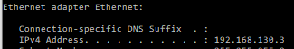
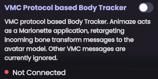
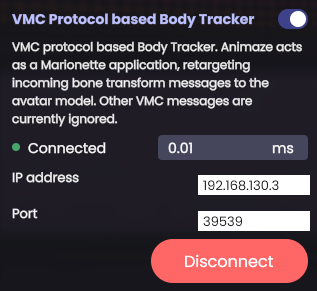

Animaze VMC Protocol Usage Guide
Animaze supports full-body retargeting (or even partial) with info received through the VMC protocol. The Virtual Motion Capture Protocol (VMC protocol), enables various applications to send and receive “avatar motions” with heterogenous sets of sensors and trackers (e.g. iPhone, webcam-based hand tracking, VR HMD body tracking, inertia sensor trackers, Kinect, etc.) through a network protocol.
The Architecture is quite simple, there are Assistant/Performer applications that can send motion data (body tracking, expressions, device data) and Marionette applications that receive data, retarget and render avatars. Animaze can act as a Marionette application that retargets only body tracking data.
There’s a list of Assistant/Performer applications that can send data to Animaze here: VMC Protocol リファレンス実装と使用例
| Each sender app is different and the UI/UX flow to start sending the motion data greatly varies. In this guide, we focus on illustrating a more abstract setup guide. The base idea is to have the Sender app send data to the same IP/Port combination as the Receiver app, in Animaze (which is the receiver app) you’ll have to activate the VMC Protocol body tracker, match the IP/Port combination, and connect. That’s all, that simple. |
Here’s a breakdown:
-
go to Sender App
-
(in Sender App) Search and find the VMC Protocol sending config UI. Usually, apps that support VMC protocol have this icon somewhere

-
(in Sender App) Configure the IP (use default port 39539) to match the one of the PC Animaze is installed on. To find out the IP of the PC, windows + R combo, write down cmd (opens Command Prompt), then in Command Prompt, write ipconfig and hit enter. Now identify your IP address. Here’s how it should look.


-
(in Sender App) Find a function to start sending/broadcasting the motion data.
-
go to Animaze app
-
(in Animaze) Go to Settings > Advanced Tracking Configuration > Select Trackers > scroll down to VMC Body Tracker and activate


-
(in Animaze) Configure the IP to match your PC’s IP. Animaze should already have completed the field for IP with your PC’s IP.


-
(in Animaze) Tap Connect button if it is not already connected.
-
you are all set, if the Sender app is sending data, Animaze should already be retargeting receiving data.